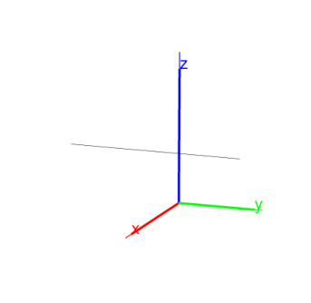

14.5.8 Common perpendiculars to lines in space:
common_perpendicular
The
common_perpendicular
command finds the common perpendicular to two lines.
common_perpendicular
takes two arguments:
L
,
M
, two lines.
common_perpendicular(
L
,
M
)
returns and draws the common perpendicular to
L
and
M
.
Example
Input:
L1:= line(point(1,1,0),point(0,1,1)):;
L2:= line(point(0,-1,0),point(1,-1,1)):;
common_perpendicular(L1,L2)
Output:
